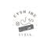
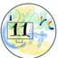

其中包括：
- 樹
- STL
- 排序
- 遞迴
- 搜尋
- 圖論
- 貪心法
- 資料結構
- 動態規劃
SCIST 是一群來自嘉義、台南、高雄三地的高中學生，經過許多活動以及比賽後深深感受到南北資訊能力以及資源的落差，我們希望透過 SCIST 舉辦的課程、研討會帶動南部學生的資訊能力水平，同時也帶來更多資源提供所有人進行學習！



嘉義高中｜電腦社
CYCC

嘉義女中｜資訊研究社
PRC
嘉義高工

臺南一中｜資訊社
TFcis

臺南女中｜資訊研究社
TGIRC
臺南高工｜網頁設計社
NTIHSWDC

新化高中｜資訊研究社
興國高中｜資訊應用社
家齊高中｜資訊研究社
CCIRS

高雄中學｜程式設計社
KSPGC

高雄女中｜電腦資訊暨網路科技研究社
I2TRC2

鳳山高中｜電腦資訊社
FSCS